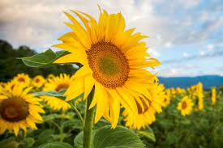

Floricultura Barueri

A rosa é uma das flores mais populares no mundo. Vem sendo cultivada pelo homem desde a Antiguidade. A primeira rosa cresceu nos jardins asiáticos há 5 000 anos. Na sua forma selvagem, a flor é ainda mais antiga. Celebrada ao longo dos séculos, a rosa, símbolo dos apaixonados, também marcou presença em eventos históricos importantes e decisivos. Fósseis dessas rosas datam de há 35 milhões de anos.
Principais Características
- São vermelhas
|
- Têm espinhos
- Têm um ótimo aroma
Rosas são boas para:
- Dar à amantes/namoradas
- Presente de dia da mulher
- Buquê de casamento

É caracterizada por possuir grandes inflorescências do tipo capítulo — com aproximadamente 30 cm de diâmetro — cujo caule pode atingir até 3 metros de altura e apresenta filotaxia do tipo oposta cruzada. O girassol mais alto já registrado chegou a 9.17 metros.
Principais Características:
- O girassol é a flor nacional da Ucrânia
- A flor foi usada como símbolo do Esteticismo, que foi movimento artístico no século XIX.
- Girassóis foram tema na série de pinturas de Van Gogh, da qual Doze Girassóis numa Jarra faz parte.
Rosas são boas para:
- Para decorar a casa
- Para tirar fotos
- Para saber as horas